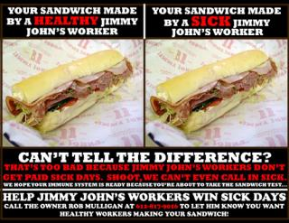

Submitted on Thu, 04/07/2011 - 3:06pm
It may come as a surprise to those who have never worked in the food industry to hear that not only Jimmy John's sandwiches, but also the pizzas, salads, burgers, and burritos that are consumed in many American restaurants often have a few secret ingredients: cold, flu, and other germs. There is a simple reason for this. Jimmy John's and many other fast food restaurants do not allow workers to take sick days. Management pressures sick workers to find a replacement or come to work. In addition, wages at Jimmy John's and throughout US food service are so low that workers cannot afford to take a day off if they fall ill. The result of these pressures is that American restaurant workers work while sick, creating an enormous public health risk. The evidence is not just anecdotal; in a recent study performed by the Center for Infectious Disease Research and Policy, of 793 employees surveyed 72% said they worked while they had severe flu symptoms. It doesn't have to be this way. According to an Institute for Social Health and Policy study, 127 countries guaranteed at least a week of paid sick days per year for all workers.
The IWW Jimmy John's Workers Union is tired of seeing our coworkers with colds, the flu, or even strep throat be forced to risk getting written up or being fired for protecting public health. So we proposed a simple solution to Mike and Rob Mulligan, the owners of our franchise. For weeks, we called on them to allow workers to call in sick and provide some paid time off. Week after week, they ignored our polite requests. As flu season hit its peak, we gave them an ultimatum–-reform your sick day policy or we will inform the public that you are putting private profits over public health.
Mike and Rob Mulligan refused, so we put up 3000 posters throughout the city alerting the public that the sandwiches you consume could be filled with cold and flu germs from workers who can't take a day off.
In retaliation for blowing the whistle, Jimmy John's fired six outspoken union members in an attempt to silence us.
Submitted on Sat, 03/26/2011 - 12:02pm
 Whistleblower Workers Pledge Action for Right to Call in Sick, Paid Sick Days
Whistleblower Workers Pledge Action for Right to Call in Sick, Paid Sick Days
Jimmy John's Workers Union- Industrial Workers of the World
Contacts: David Boehnke, 651-315-4222 and Davis Ritsema, 612-281-9772
March 25, 2011
MINNEAPOLIS- Thousands of community supporters have jammed Jimmy John's phone lines and flooded the chain's Facebook page with messages of outrage and support for six whistleblowers who were fired for exposing widespread coercion to work while sick at the chain. Today, the workers have announced that they plan to escalate actions against Jimmy John's until their demands for the right to call in sick, paid sick days, and reinstatement of the fired workers are met.
“We will not be silenced. Speaking out against the policy of forcing workers to work while sick is not only our right, it is our duty. “ said Erik Forman, one of the fired sandwich workers. “The unfettered greed of franchise owner Mike Mulligan and Jimmy John himself jeopardizes the health of thousands of customers and workers almost every day. We will speak out until they realizes that no one wants to eat a sandwich filled with cold and flu germs.”
Under current policy, Jimmy John's workers are disciplined for calling in sick if they cannot find a replacement. In addition, many workers are unable to afford to take a day off if they are ill because wages at the sandwich chain hover around the federal minimum of $7.25 an hour. The result of these pressures is that sandwich-makers often have to work while sick, creating an enormous public health risk.
After franchise management rebuffed numerous employee requests to reform the sick day policy, members of the IWW Jimmy John's Workers Union posted 3000 copies of a poster advising the public of health risks at the sandwich chain. Management fired six outspoken union members in retaliation.
Submitted on Wed, 03/23/2011 - 12:38pm
Sandwich Chain Seeks to Suppress Educational Poster on the Risks of Eating Food Prepared by Sick Employees
Jimmy John's Workers Union - Industrial Workers of the World
Contacts: Micah Buckley-Farlee, 612-845-9290 Mike Wilkow, 612-807-6633
March 23, 2011
MINNEAPOLIS- In an effort to silence employees who have blown the whistle on serious food safety hazards at Jimmy John's, the company fired six workers yesterday for putting up posters demanding the right to call in sick and paid sick days in order to avoid exposing customers to infection. Under current policy, Jimmy John's workers are disciplined for calling in sick if they cannot find a replacement, forcing many workers to make sandwiches while ill.
"It just isn't safe -- customers are getting their sandwiches made by people with the flu, and they have no idea," said Micah Buckley-Farlee, one of the fired workers, "and now we're getting fired for blowing the whistle on this disgusting practice. Rather than safeguard public health and do the right thing for their employees and their customers, Jimmy John's owners Mike and Rob Mulligan are trying to silence us. These illegal and offensive firings will not stand."
In addition to the threat of discipline for calling in sick, many workers are unable to afford to take a day off if they are ill because wages at the sandwich chain hover around the federal minimum of $7.25 and the company offers no benefits. The result of these pressures is that sandwich-makers often have to work while sick, creating an enormous public health risk. The issue of working while sick in restaurants has assumed increased concern from the public in recent years. A recent study performed by the Center for Infectious Disease Research and Policy shows a marked increase in workers unable to take sick leave noting that of the 793 employees surveyed 72% said they worked while they had severe flu symptoms.
Submitted on Tue, 01/11/2011 - 1:59am
FOR IMMEDIATE RELEASE - Jimmy John's Workers Union; Industrial Workers of the World
Contacts:
- Micah Buckley-Farlee, 612-845-9290
- Erik Forman, 612-598-6205
Sandwich Workers Begin New Push for “10 Point Program” to Reform Fast Food Industry
Attached:
MINNEAPOLIS– The National Labor Relations Board approved a settlement today nullifying the results of the historic October 22 union election at Jimmy John's, putting victory back on the table for the nation's first-ever union in franchised fast food. The settlement validates workers' claims that franchise owners Mike and Rob Mulligan were able to squeak out an 87-85 victory in the election only by resorting to unlawful tactics including threatening a wage freeze, intentionally fabricating rumors that the union engaged in sabotage, retaliating against union supporters, and numerous other labor rights violations.
With the tainted election results nullified, the union is asking the franchise owners to negotiate over its "10 Point Program for Justice at Jimmy John's," a comprehensive package of reforms that will bring respect, dignity, and democracy to the fast food workplace.
“There can now be no doubt that our rights were severely violated, but we're willing to put the past behind us. We are calling on Mike and Rob Mulligan to make a fresh start and work with us, rather than against us, to improve the lives of Jimmy John's workers and their families by negotiating over our 10 Point Program for modest but urgently needed changes,” said Micah Buckley-Farlee, a delivery driver at Jimmy John's and active member of the union campaign.
Submitted on Sun, 01/09/2011 - 5:17pm
The IWW Nebraska General Membership Branch (GMB) files Unfair Labor Practice charging Starbucks Coffee Company with violating Labor Law.
Starbucks Workers Union (Industrial Workers of the World) contact: Samantha Cole (402)669-8479
Omaha- The Starbucks Workers Union is demanding the reinstatement of former employee and union member Tyler Swain after being unjustly terminated.
On Thursday December 30, 2010 Tyler Swain was terminated from his position as a shift supervisor by the downtown Starbucks store manager Scott Creed for ‘insubordination’.
Co-worker and union member Samantha Cole argues otherwise and says that the Starbucks Coffee Company has had a bulls-eye on Swain since they formed the Nebraska Starbucks Workers Union in August. Cole stated, “Tyler has always been a model employee and takes great pride in his job and his relationships he’s developed with our regular customers. Starbucks has been desperately trying to find a reason to get rid of Tyler since we went public with our union and started organizing our district.” She added that, “Customers have noticed and asked where he is. When I tell them that he was terminated they are surprised and say that he is always so friendly and never would have guessed he would be fired for being a bad employee. However, one customer who comes in on a regular basis and had made negative remarks to us when we went public with our union said ‘that’s what he gets for trying to start a union’”.
The Nebraska Starbucks Workers Union went public with their union and organizing drive on August 6th, 2010 by walking off the job and presenting then District Manager Jennifer Rojas with a list of demands which included increasing wages above poverty rates, an inclement weather plan for the district, consistent scheduling and fully stocked First Aid kit in the store as per OSHA regulations among other things.
Union member Sasha McCoy says that Starbucks has been focused on causing discontent among the workers at 15th and Douglas Starbucks by manufacturing lies about Swain. “Shortly after we presented Jenny with our list of demands and went public with our desire to organize a union, Starbucks has been actively trying to accuse Tyler of a number of unethical charges. The Human Resources Department was even accusing Tyler of sexual harrasment when there was nothing like that going on. These charges were absolutely absurd. They were trying to take the focus off of our demands and desire to organize a union and onto make believe charges against Tyler,” said McCoy.